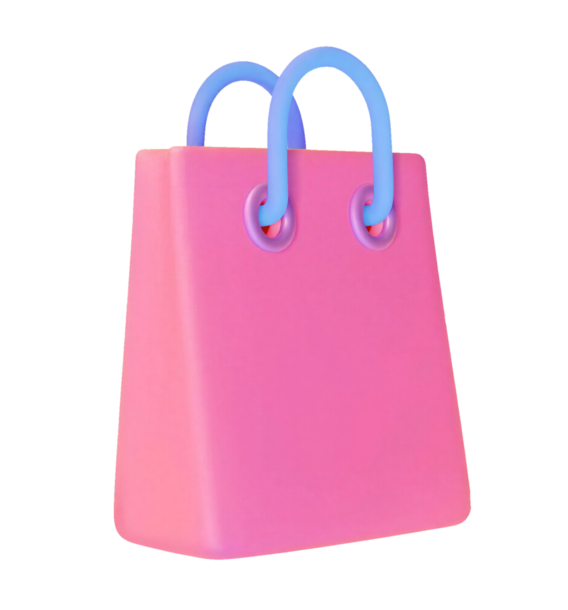

A indústria da moda está passando por uma grande transformação com o avanço da tecnologia, nesse contexto, as mulheres desempenham um papel fundamental e motor na construção de um futuro sustentável, atuando não apenas como consumidoras conscientes, mas também como líderes, inovadoras e educadoras nos setores de moda, consumo e sustentabilidade.
Desde o século XXI, um paradigma se estabeleceu: o desenvolvimento ambientalmente sustentável e sua implicação na criação de produtos para o vestuário de moda. Embora a moda seja importante tanto economicamente quanto culturalmente, é uma das áreas que mais contribuem para a degradação ambiental, devido ao uso intensivo de recursos naturais, como água, energia e matérias-primas. Além disso, a fabricação em larga escala e o modelo de consumo conhecido como "fast fashion" incentivam a produção excessiva de roupas, muitas vezes de baixa durabilidade, incentivando o consumismo e a cultura do descarte. Nesse cenário, a tecnologia surge como uma aliada essencial, possibilitando o desenvolvimento de materiais inovadores, processos produtivos mais eficientes e ferramentas digitais que promovem maior transparência nas cadeias de produção.
A sustentabilidade na moda envolve mudanças em todas as etapas: desde o design das peças, escolha de materiais mais ecológicos, processos produtivos menos poluentes, até a conscientização do consumidor sobre o consumo responsável. Ou seja, não depende apenas das empresas, mas também das atitudes das pessoas.
Com base nisso, as mulheres têm grande influência nesse processo, pois atuam como consumidoras, criadoras, estilistas e empreendedoras. No campo tecnológico, mulheres também ocupam posições de destaque como desenvolvedoras, cientistas de materiais e gestoras de startups voltadas à moda sustentável. Elas podem promover mudanças importantes ao escolher produtos sustentáveis, apoiar marcas responsáveis e desenvolver novas formas de produção mais conscientes, contribuindo diretamente para um futuro mais sustentável na moda e na tecnologia.
A tecnologia tem desempenhado um papel fundamental na transformação da moda e do consumo, alterando desde os processos produtivos até o comportamento dos consumidores. Compreender os impactos da tecnologia na moda exige analisar como essas mudanças influenciam diretamente o consumo e a forma como a moda é vivenciada no cotidiano.

O avanço das tecnologias digitais ampliou significativamente o acesso aos produtos de moda. As pessoas passaram a utilizar plataformas online para pesquisar tendências, comparar preços e realizar compras com maior praticidade. A presença constante de novidades em redes sociais e lojas virtuais intensifica o consumo, uma vez que as tendências são renovadas em ritmo acelerado. Isso acaba contribuindo para a criação de um consumo mais impulsivo, fazendo com que o fast fasion (produção de peças de vestuário em grandes quantidades e o mais rápido possível, reduzindo a qualidade do produto) seja cada vez mais comum, assim gerando cada vez mais lixo.
O avanço tecnológico trouxe ganhos significativos para a moda. Na produção, ferramentas como modelagem digital, automação e inteligência artificial tornaram o processo mais rápido, eficiente e com menos desperdício. No consumo, a tecnologia permite experiências personalizadas (como recomendações inteligentes e provadores virtuais) além de conectar consumidores a marcas sustentáveis por meio das plataformas digitais. Nesse contexto, as mulheres se destacam como protagonistas: criam marcas, desenvolvem tecnologias e influenciam hábitos de consumo mais conscientes.
As mulheres ocupam posição central na transformação tecnológica da moda. Como principais consumidoras do setor, elas moldaram o mercado digital e foram além, passando a liderar a inovação como designers, cientistas e empreendedoras. Elas utilizam a tecnologia para desenvolver soluções concretas: tecidos ecológicos, plataformas digitais de revenda e sistemas que reduzem o desperdício na produção. Além disso, atuam fortemente na educação e conscientização, usando redes sociais para influenciar milhões de pessoas a adotarem hábitos mais sustentáveis. Seu trabalho também impulsiona a economia circular, promovendo reutilização, customização e valorização de pequenos produtores, mostrando que é possível consumir moda de forma consciente e responsável.
A discussão sobre o papel das mulheres na construção de um futuro sustentável na moda, no consumo e na sustentabilidade é central para entender as transformações contemporâneas da indústria fashion. Historicamente, a moda esteve associada ao consumo rápido e ao desperdício, mas nas últimas décadas, mulheres têm liderado uma mudança profunda rumo a práticas mais éticas, circulares e conscientes. Agora você vai conhecer alguns dos principais rostos responsáveis por essas mudanças:
Stella McCartney é referência na moda sustentável, integrando luxo e responsabilidade ambiental. Desde o início, evita couro e peles, investindo em materiais alternativos e reciclados. Além do design, atua como ativista global, incentivando mudanças na indústria e participando de iniciativas ambientais importantes.
Livia Firth fundou a Eco-Age e popularizou a moda sustentável com o Green Carpet Challenge, levando o tema para grandes eventos. Seu trabalho conecta moda, mídia e ativismo, incentivando marcas a adotarem práticas responsáveis antes mesmo de isso virar tendência.
Suzanne Lee desenvolveu o conceito de biofabricação na moda, criando tecidos a partir de organismos vivos, reduzindo o uso de recursos naturais. Também fundou a Biofabricate, unindo ciência e design para desenvolver materiais inovadores e sustentáveis.
Orsola de Castro é cofundadora do Fashion Revolution, movimento que cobra transparência na indústria da moda. Ela defende o consumo consciente, promovendo práticas como reutilização e upcycling, em oposição ao fast fashion.
Aniela Hoitink fundou a Neffa e trabalha com materiais biodegradáveis e produção sem costura, reduzindo desperdícios. Seu trabalho une tecnologia e sustentabilidade, representando o futuro da moda.
Além dessas mulheres, muitas outras têm contribuído significativamente para a sustentabilidade na moda. Gabriela Hearst é conhecida por suas práticas de produção responsáveis e transparência. Priya Ahluwalia utiliza materiais reciclados e aborda questões sociais em suas coleções, enquanto Mara Hoffman reformulou completamente sua marca para priorizar sustentabilidade. Essas lideranças femininas demonstram que a sustentabilidade na moda não é apenas uma tendência, mas uma transformação estrutural impulsionada por valores éticos e inovação.
Entre os avanços tecnológicos mais relevantes para a indústria têxtil, destaca-se a nanotecnologia, que consiste na manipulação de materiais em escala extremamente pequena, permitindo a criação de tecidos com propriedades inovadoras que vão muito além do que os processos tradicionais conseguem oferecer. Essa tecnologia representa uma das fronteiras mais promissoras entre ciência e moda, abrindo caminho para uma nova geração de produtos têxteis.
A nanotecnologia consiste na manipulação de materiais em escala extremamente pequena, permitindo a criação de tecidos com propriedades inovadoras que vão muito além do que os processos tradicionais conseguem oferecer.
Entre as principais aplicações estão roupas com resistência à água, tecidos antibacterianos, proteção contra raios ultravioleta e controle térmico, tornando as peças mais adequadas a diferentes contextos, do uso esportivo a ambientes de trabalho.
A nanotecnologia pode reduzir a necessidade de lavagens frequentes e aumentar a vida útil dos produtos, diminuindo o impacto ambiental gerado pelo descarte precoce, alinhando-se aos objetivos de sustentabilidade que orientam a indústria.
O alto custo de produção e a limitada acessibilidade no mercado em larga escala ainda são barreiras relevantes. O avanço contínuo das pesquisas aponta, porém, para um futuro em que tecidos inteligentes se tornem cada vez mais democratizados.
Maior durabilidade combate o fast fashion
Roupas mais resistentes reduzem a necessidade de reposição frequente, combatendo diretamente a lógica do descarte acelerado.
Economia de água e energia
Tecidos antibacterianos precisam de menos lavagens, reduzindo o consumo de água e energia ao longo de toda a vida útil da peça.
Riscos à saúde humana
As nanopartículas podem ser absorvidas pela pele, inaladas ou ingeridas. Devido ao seu tamanho diminuto, penetram nas células e atravessam barreiras biológicas, podendo se acumular em órgãos vitais sem que o sistema imunológico consiga eliminá-las.
Contaminação ambiental pela lavagem
A liberação contínua de nanomateriais durante a lavagem das roupas contamina a água e o solo, entrando na cadeia alimentar e afetando a fauna e a flora, com efeitos ainda pouco conhecidos.
Falta de regulamentação e transparência
A maioria dos produtos têxteis com nanotecnologia não possui rotulagem obrigatória nem informações sobre composição, deixando o consumidor sem conhecimento dos riscos reais, já que não há leis específicas supervisionando essa comercialização.
Você já parou para pensar em quem realmente está costurando o futuro do que vestimos? Muito além das vitrines e das passarelas, a moda vive hoje uma revolução silenciosa, mas poderosa. E na linha de frente desse movimento, estão as mulheres. Elas não são apenas o público que mais consome; elas são as mentes que estão reprogramando a indústria para que ela seja, finalmente, ética e gentil com o planeta.
Por muito tempo, fomos ensinados que a moda era sinônimo de rapidez e descarte — o famoso fast fashion. Mas esse modelo custou caro ao meio ambiente. O que acontece quando unimos a sensibilidade do design com o rigor da ciência? Imagine tecidos cultivados em laboratório a partir de organismos vivos, como faz a designer Suzanne Lee, ou roupas que cuidam da nossa pele e duram anos graças à nanotecnologia. Essas inovações não servem apenas para criar peças modernas; elas servem para que possamos lavar menos nossas roupas, economizar água e reduzir o desperdício. É a tecnologia sendo usada para o que ela tem de melhor: proteger o nosso futuro.
No fim do dia, a tecnologia e a liderança dessas mulheres nos dão uma ferramenta valiosa: o poder de escolha. A construção de uma moda sustentável não depende de uma única grande solução, mas da soma de muitas vozes. É a cientista criando o novo material, a estilista priorizando o upcycling e você, ao escolher uma marca que respeita o meio ambiente. Juntas, essas ações estão transformando a moda em algo muito maior do que estética: um manifesto de respeito à vida e ao amanhã.
Sustentabiilidade não é tendência,
é o futuro da moda.
— STELLA MCCARTNEY
stellamccartney.com
https://www.stellamccartney.com/gb/en/Fashion Revolution
https://www.fashionrevolution.org/UNEP - UN Environment Programme
https://www.unep.orgSUSTENTABILIDADE AMBIENTAL: UM DESAFIO PARA A MODA
https://www.redalyc.org/articulo.oa?id=514051713006Sustainability Magazine
https://sustainabilitymag.com/